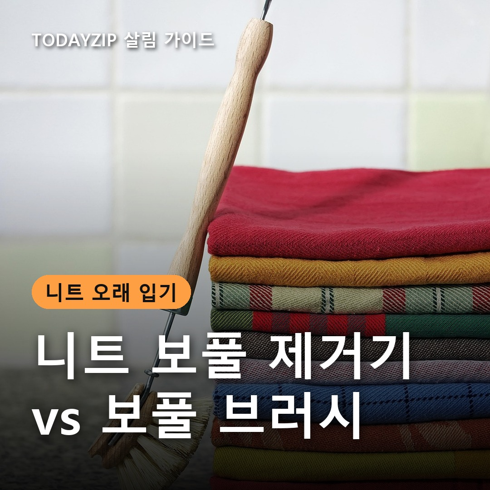
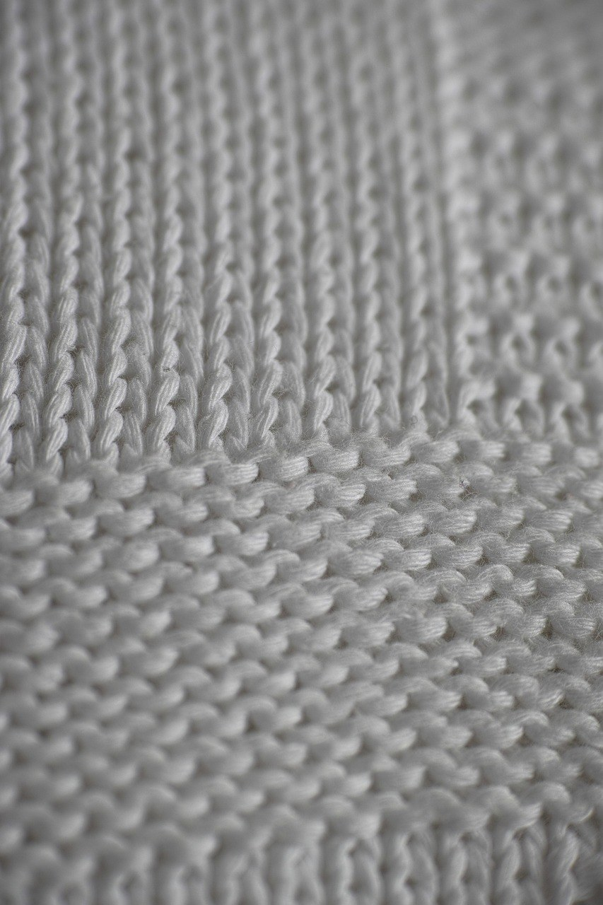
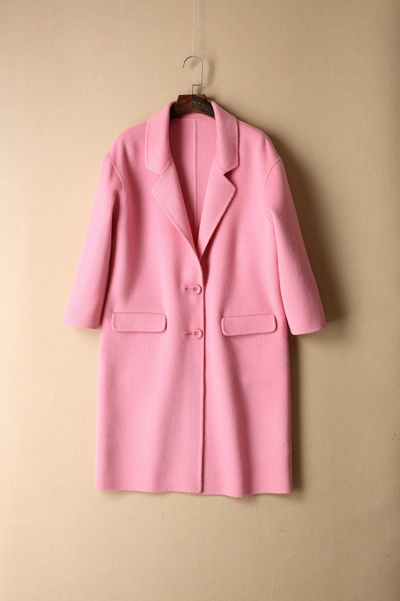
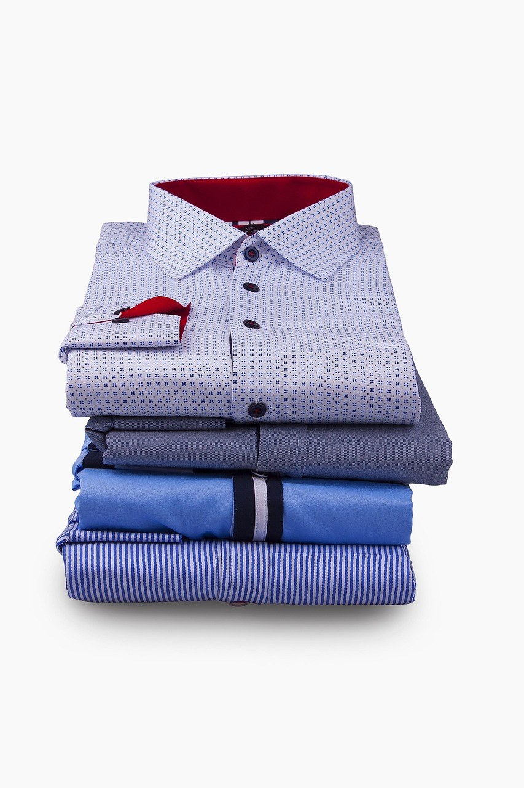

[사진 1: 썸네일]
아끼는 니트를 몇 번 입었을 뿐인데 팔꿈치랑 옆구리에 동글동글 보풀이 올라와 있으면 속상하죠. 손으로 하나씩 떼다 보면 오히려 실이 늘어나는 것 같고요.
그래서 많이 찾는 게 니트 보풀 제거기와 보풀 브러시예요. 둘이 어떻게 다른지, 어떤 옷에 무엇을 써야 구멍 없이 정리되는지, 보풀을 덜 생기게 하는 관리법까지 정리해 드릴게요.
[사진 2]
📷 [직접 찍은 사진 넣기: 집에 있는 니트의 팔꿈치·옆구리에 보풀이 올라온 부분 가까이]
보풀은 실의 짧은 섬유가 마찰로 겉으로 빠져나와 서로 엉겨 붙은 덩어리예요. 그래서 가방 끈이 닿는 어깨와 옆구리, 책상에 닿는 팔꿈치처럼 반복해서 쓸리는 자리에 먼저 생겨요.
소재 영향도 커요. 모헤어·알파카처럼 털이 긴 실이나 기본 울 니트는 몇 번만 입어도 보풀이 잘 올라오고, 나일론·폴리에스터 혼방이 많은 니트는 보풀이 덜한 대신 촉감이 거칠 수 있어요.
✍️ [내 경험 한두 줄: 우리 집에서 보풀이 제일 잘 생기는 옷은 어떤 건가요? (니트/코트/가디건/수면바지)]
전동 보풀 제거기는 구멍 뚫린 덮개(날망) 안에서 칼날이 돌며 튀어나온 보풀을 잘라 내요. 보풀 브러시(빗)는 촘촘한 솔이나 빗살로 보풀을 걸어 떼어 내는 방식이라 전기가 필요 없어요.
| 구분 | 전동 보풀 제거기 | 보풀 브러시·빗 | 테이프·돌돌이 |
|---|---|---|---|
| 원리 | 날망 안 칼날로 잘라 냄 | 솔·빗살로 걸어 떼어 냄 | 끈끈한 면에 붙여 떼어 냄 |
| 속도 | 넓은 면도 빠름 | 느림, 부분 정리용 | 떨어진 보풀만 정리 |
| 잘 맞는 옷 | 코트·두꺼운 니트·담요 | 얇은 니트·캐시미어 | 마무리 먼지·털 정리 |
| 주의할 점 | 세게 누르면 실이 걸려 구멍 | 세게 빗으면 결이 상함 | 엉겨 붙은 보풀은 잘 안 떨어짐 |
[사진 3]
코트나 두꺼운 니트, 무릎 담요처럼 면이 넓고 짜임이 단단한 옷은 니트 보풀 제거기가 편해요. 세탁소용처럼 날망 구멍이 넓은 모델은 두꺼운 옷에 잘 맞아요.
반대로 얇은 니트나 캐시미어는 날망 구멍이 넓으면 실이 그대로 빨려 들어가 구멍이 날 수 있어요. 이런 옷은 날망 구멍이 촘촘한 제거기를 쓰거나, 처음부터 보풀 브러시로 가볍게 정리하는 편이 안전해요.
📷 [직접 찍은 사진 넣기: 니트를 평평한 바닥이나 탁자에 펼쳐 놓은 모습]
보풀 제거기는 결국 겉으로 튀어나온 섬유를 잘라 내는 도구예요. 그래서 보일 때마다 전체를 밀면 원단이 조금씩 얇아질 수 있어요. 눈에 띄는 부분만 짧게 정리하세요.
✍️ [내 경험 한두 줄: 지금까지 보풀은 주로 어떻게 정리해 왔나요? (손으로 떼기/테이프/세탁소/그냥 입기)]
[사진 4]
보풀을 없애는 것보다 덜 생기게 하는 게 옷에는 더 좋아요. 세탁 라벨을 먼저 확인하고, 아래 습관만 지켜도 마찰이 줄어들어요.
Q. 눈썹칼이나 면도기로 밀어도 되나요?
A. 칼날이 드러난 도구는 각도가 조금만 틀어져도 옷이 찢어지거나 구멍이 날 수 있어요. 아끼는 니트라면 날망이 있는 제거기나 브러시를 쓰는 게 안전해요.
Q. 보풀 제거기를 자주 쓰면 옷이 상하나요?
A. 튀어나온 섬유를 잘라 내는 방식이라 너무 자주, 전체를 밀면 원단이 얇아질 수 있어요. 보풀이 눈에 띄는 부분만 가끔 정리하세요.
정리하면, 코트·두꺼운 니트는 니트 보풀 제거기로 빠르게, 얇은 니트·캐시미어는 촘촘한 날망이나 보풀 브러시로 살살 정리하세요. 어떤 도구든 누르지 말고 가볍게, 안 보이는 곳에서 먼저 시험해 보는 게 구멍을 막는 방법이에요.
여러분은 보풀 때문에 못 입게 된 옷이 있나요? 보풀 정리하는 나만의 방법이 있다면 댓글로 알려 주세요.
인스타그램 @todayzip.info 에서 살림 꿀팁을 30초 영상으로도 볼 수 있어요.